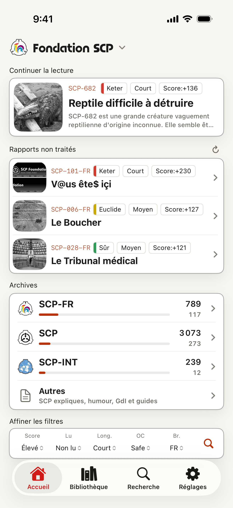
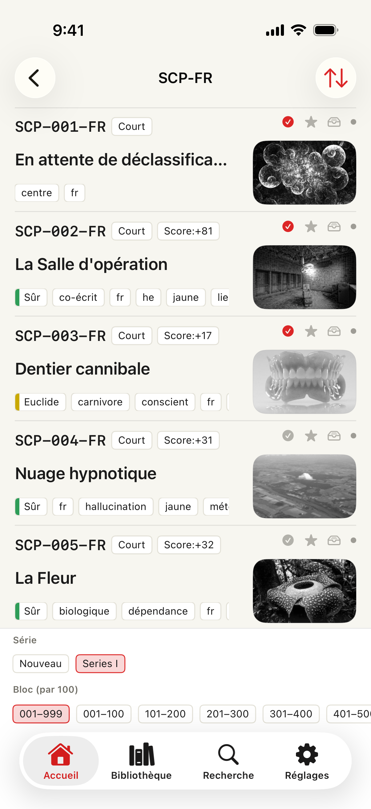
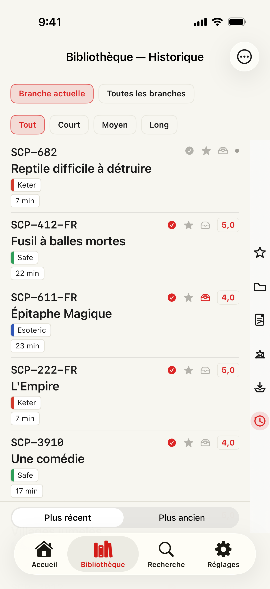

Free
La recherche par numéro, titre, tags, classe, longueur et score Wiki est gratuite, comme l’historique, les notes, rappels, widgets et le résumé, journal d’activité et lectures en attente. Favoris : 20 ; à lire : 100.
SCP docs · 6.0.2 · 2026-10-10
La recherche par numéro, titre, tags, classe, longueur et score Wiki est gratuite, comme l’historique, les notes, rappels, widgets et le résumé, journal d’activité et lectures en attente. Favoris : 20 ; à lire : 100.
Premium supprime les publicités : surlignages, mémos, lecture vocale, hors ligne, dossiers, recherche dans vos mémos et données, recherches enregistrées et alertes, analyses détaillées. Pas de quota d’abonnement pour les favoris et lectures en attente (limite de sécurité de 10 000 par liste). Abonnements mensuel et annuel.
Choisissez séparément URL, titre, texte, mémos et surlignages ; les choix sont conservés. Vérifiez l’aperçu avant de partager, copier, enregistrer un fichier ou utiliser une destination configurée. L’éditeur de carte est accessible sur cet écran. Le texte provient de l’article affiché dans le lecteur, sans récupération groupée depuis la Bibliothèque.
Les articles restent dans la langue de leur branche. Application et site : 17 langues. Les sources, crédits et licences font autorité.
App Store · iPhone / iPad · iOS 17+Reader / Catalog / Library


